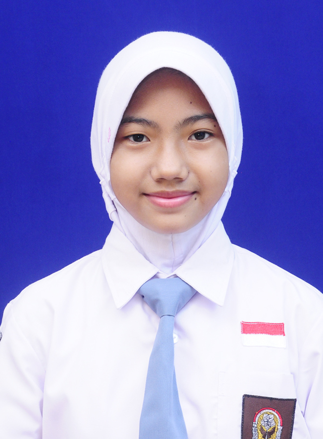

Biodata Diri
| Nama Lengkap |
: Eridayalma Zahra Yohar |
 |
| Nama Panggilan |
: Erida |
| Asal |
: Klahang, Sokaraja |
| Hobi |
: Bermain alat musik |
| Makanan Favorit |
: Nasi Padang |
| Minuman Favorit |
: Lemon tea |
| Cita-cita |
: Desainer |
| Favorit di HP |
: Showroom |
Gaya belajar dirumah
Gaya belajar saya dirumah yaitu dimulai dari membaca materi power point dari guru mapel, melihat video animasi
belajar di Youtube dan mencatat poin-poin penting dari materi tersebut.
Kendala Belajar dirumah
Kendala Belajar dirumah yaitu timbulnya rasa mudah bosan dan sulit untuk berkonsentrasi